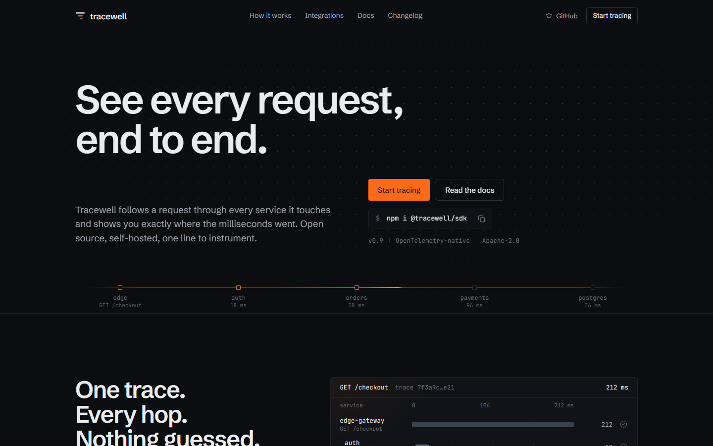
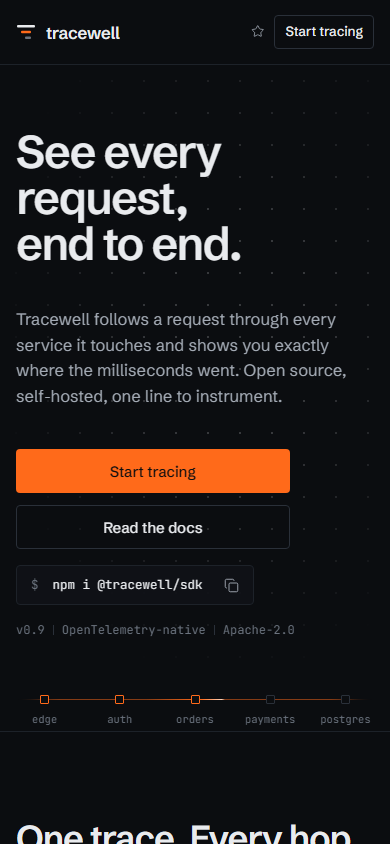
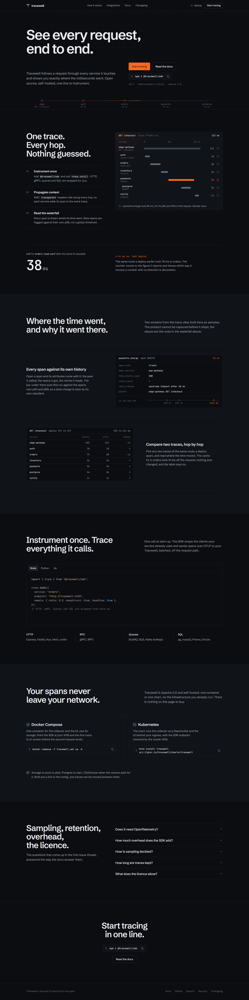

For the backend engineers and SREs who are asked where the time went, Tracewell is the open-source tracer that follows one request through every service it touches and draws the answer as a waterfall. It runs on their own infrastructure, speaks OpenTelemetry, and keeps no feature behind a key.
Concept: where the milliseconds went. Every surface shows a request crossing services, and one span that took too long.
The Sage
Knowledge through evidence. Tracewell shows the trace instead of claiming speed; the waterfall is the argument, and the slow span is found, not guessed.
payments.charge took 96 ms, 2.1× its p99.The waterfall is the argument.
The mark is a trace waterfall. Three spans, each starting inside its parent and ending before it does. The orange child is the slow one: the span the product exists to find.
Söhne, the brand face, for display and interface; set here in Schibsted Grotesk, its open stand-in, at -0.045em on display sizes.
JetBrains Mono for data only: service names, durations, trace ids, commands. Never on a label that carries no figure.
Corners 4px on controls and panels, 2px on span bars. No shadows: elevation by lightness, from ground to panel to line.
Follow a request through every service it touches and see where the milliseconds went.
$ npm i @tracewell/sdk
One call at start-up wraps HTTP, gRPC, queues and SQL.
import { trace } from "@tracewell/sdk"; trace.init({ service: "orders" });



Desktop 1440, phone 390, the full page